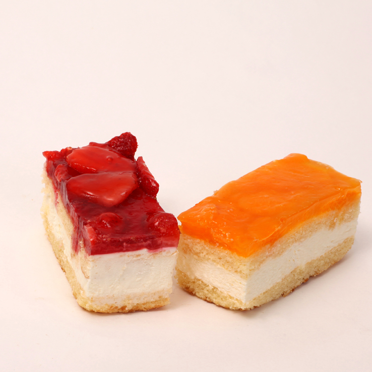

Wat maakt onze glutenvrije en lactosevrije gebakjes zo bijzonder? Het begint allemaal met de ingredienten. Wij selecteren zorgvuldig de hoogste kwaliteit glutenvrije meelsoorten en lactosevrije zuivelalternatieven om een smaakvolle basis te creeren. Onze recepten zijn speciaal ontwikkeld om de delicate balans te vinden tussen smaak en textuur, zonder concessies te doen aan de kwaliteit. Een ander aspect dat mijn bakkerij onderscheidt, is onze toewijding aan het voorkomen van kruisbesmetting. We hebben aparte werkruimtes en apparatuur voor het bereiden van glutenvrije en lactosevrije gebakjes, waardoor we de hoogste normen voor veiligheid kunnen handhaven. Hierdoor kunnen klanten met voedselintoleranties met een gerust hart van onze lekkernijen genieten. Ons assortiment glutenvrije en lactosevrije gebakjes is divers en verrukkelijk. Van smeuïge chocoladetaarten tot luchtige croissants, we hebben voor ieder wat wils. Ons doel is om niet alleen smaakvolle opties te bieden, maar ook om een onvergetelijke eetervaring te creëren. Bij mijn bakkerij geloven we in eerlijke communicatie en uitmuntende klantenservice. Ons personeel is goed geïnformeerd over onze producten en kan vragen beantwoorden en suggesties doen, zodat elke klant de perfecte keuze kan maken. Dus, als je op zoek bent naar de beste glutenvrije en lactosevrije gebakjes, kom dan langs bij mijn bakkerij en laat je smaakpapillen verwennen. We zijn er trots op dat we kunnen bijdragen aan een genietbare en zorgeloze eetervaring voor iedereen, ongeacht hun dieetrestricties. Proef het verschil en ontdek waarom onze glutenvrije en lactosevrije gebakjes de beste zijn.
